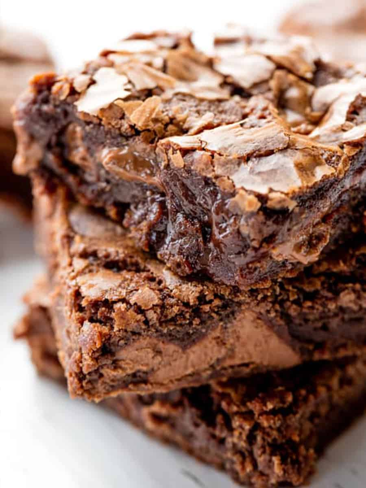

Brownie Recipe
The Best Brownie Recipe Ever has the perfect crackly top with bites of
fudgy, chewy chocolate goodness.
This easy one-bowl recipe means you’ll never buy a boxed brownie mix again!
Looking for a fully homemade brownie recipe? This recipe will make sure you
never touch boxed brownies again.
This brownie is the perfect texture combined with mouth watering chocolatey
goodness.

Ingredients
- 10 tablespoons salted butter melted
- 1 cup granulated sugar
- 2 large eggs
- 2 teaspoons vanilla extract
- 1/2 cup melted milk chocolate chips
- 3/4 cup all-purpose flour
- 3/4 cup all-purpose flour
- 1/4 cup unsweetened cocoa powder
- 1/2 teaspoon salt
- 1 cup milk chocolate chip
step by step directions
- Preheat oven to 350 degrees F.
- Line a metal 9x9 pan with parchment paper.
-
Pour melted butter into a large mixing bowl. Whisk in sugar by hand until
smooth, 30 seconds.
- Add in eggs and vanilla extract. Whisk 1 minute.
- Whisk in melted chocolate until combined and smooth.
-
Use a rubber spatula to stir in flour, cocoa powder, and salt until just
combined. Stir in whole chocolate chips.
- Pour into prepared pan and smooth out.
-
Bake in the preheated oven for 30 minutes. Let cool in pan 30 minutes
before slicing.
If you enjoyed this recipe or you have any questions you can
Email me.